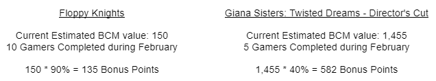
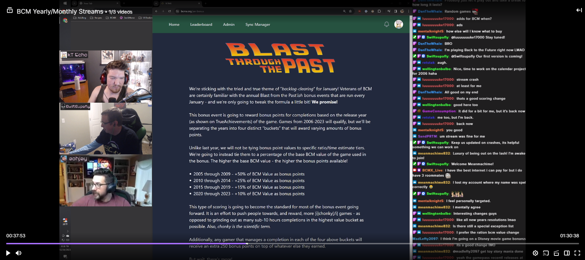

<section class="flex flex-col items-center gap-y-6 text-gray-300">
  

  <article class="flex max-w-2xl flex-col gap-y-6">
    <p>
      Yes, you read that right! Spread the Love! Not Lovebirds!
      <i>shock gasp rabble rabble</i>
    </p>

    <p>
      In what may be a controversial opinion, we’re moving away from the opt-in
      team-based Lovebirds event that has been a staple of BCM since 2019
      towards a thoroughly new and completely untested idea!
      <i>What could go wrong?!</i>
    </p>

    <p>
      Spread the Love is still going to be a group based event, but it is going
      to be more of a community-centric effort than a team-based competition.
      BCM-veterans can think of it as a... Choose-Your-Own Reverse Bounty Board?
      Say what?
    </p>

    <p>
      The concept of Spread the Love is that the more gamers that complete a
      particular game - the more bonus points that particular game ends up being
      worth. Bonus points are going to be tied to a percentage of the base BCM
      value of the game used in the bonus. The higher the base BCM value - the
      higher the bonus points available! The percentage will increase based upon
      the number of gamers who complete the game.
    </p>

    <p>
      If you are the only person to complete a specific game during the month of
      February - that game is worth zero bonus points.
    </p>

    <p>
      For each gamer to complete the game (starting with the second completion)
      the percentage will increase by 10%, until eventually maxing out at 100%.
      (+10% for each unique gamer)
    </p>

    <p>Bonus points can be visualized like this:</p>

    <ul class="ml-4 list-disc">
      <li>1 Gamer Completed = Zero Bonus Points</li>
      <li>2 Gamers Completed = +10% of BCM Value as bonus points</li>
      <li>3 Gamers Completed = +20% of BCM Value as bonus points</li>
      <li>...</li>
      <li>11 Gamers Completed = +100% of BCM Value as bonus points</li>
    </ul>

    <p>I'll outline two different examples below:</p>

    

    <p>
      This turns the event into a cooperative effort. Games with larger base BCM
      scores will obviously be worth more potential bonus points overall, but
      only if you aren't the only one to do them! Meanwhile, some safe bets
      could be picking popular, or somewhat recently released, GamePass games
      knowing that they’re likely to be completed by many other gamers!
    </p>

    <h3 class="text-xl text-white">But wait, there’s more!</h3>

    <p>
      Just like in January we are adding a community-focused goal to this event!
    </p>

    <p class="bg-slate-900 p-5">
      We’re challenging you, as a community, to unlock the full 100% multiplier
      (11 gamers completed) for three different games! Everyone’s submissions
      will contribute towards this goal. And, if met, everyone who managed to
      complete a game that at least 2 other people completed during the month
      (totaling 3 completions) will earn an additional 500 bonus points!
    </p>

    <p>
      Will you take to the Discord to plan your approach with other community
      members? Will you and your friends privately arrange to complete high
      impact games and not share the plan (or potential bonus points)?
    </p>

    <i>Just what kind of lover are you?</i>

    <p>Important Rules:</p>

    <p>
      For any completion to count towards this bonus the ratio must be at or
      above 1.5 and have a time estimate at or above 5-6 hours. <b>Or</b> the
      time estimate must be at or above 20 hours regardless of ratio. Stacks
      will count as separate games due to technical restrictions. Any game
      released in February of 2024 will not qualify for this bonus.
      Additionally, any completion that is due to a new DLC or TU releasing in
      February of 2024 also will not qualify for this bonus.
    </p>

    <h3 class="text-xl text-white">But, what about our randoms?!</h3>

    <p>
      Feel free to tune in now to
      <a
        class="text-green-400 hover:text-green-600"
        href="https://www.twitch.tv/bcmx_live"
        >our Twitch channel</a
      >
      where we are talking in depth regarding the above bonus - as well as
      revealing everyone's random game selections for February! Don't worry, if
      you can't make it the games will also be listed on your profile on
      <a
        class="text-green-400 hover:text-green-600"
        href="https://www.bcmx.org/"
        >our website</a
      >!
    </p>

    <p>
      We will be offering live re-rolls to anyone in chat who may want to kick
      off the year by re-rolling! And we'll be fielding any questions that you
      might have! Come and hang out!
    </p>

    

    <i>Stay a while and listen!</i>
  </article>
</section>
